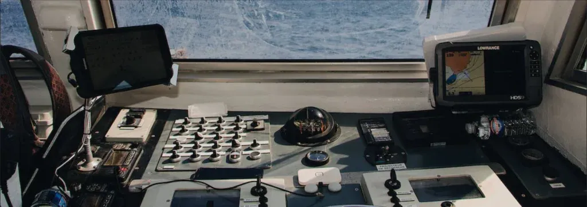
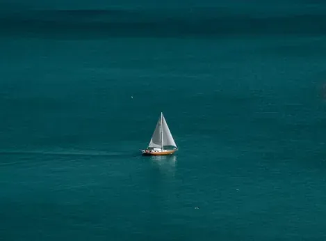

- Početna
- Pomorska akademija
Pridružite se akademiji i postanite majstor mora.
Krenite u uzbudljivu jedriličarsku avanturu u našoj akademiji — od prvih znanja do zapovjedništva jahtom.


Pomorska akademija
Otkrijte umijeće plovidbe kroz sveobuhvatna predavanja iskusnih instruktora koji sa strašću prenose svoje znanje. Doživite uzbuđenje upravljanja suvremenim plovilima i usavršite vještine kroz praktičnu nastavu. Bilo da ste početnik koji želi naučiti osnove ili iskusni pomorac koji želi unaprijediti svoje sposobnosti, naša akademija nudi poticajno i obogaćujuće okruženje. Pridružite nam se i zaplovite prema nezaboravnim pomorskim iskustvima.
Voditelj brodice i Yacht Master
CVoditelj brodice — kategorija C
3 dana predavanja u učionicama Blue Voyage Yachtinga:
- Pomorska navigacija: pomorske karte (vrste, sadržaj, katalozi, mjerila), osnove terestričke navigacije, navigacijske publikacije, kompas, uporaba elektroničkih pomagala na brodu, planiranje putovanja.
- Brodski motori i zaštitne mjere: mehanički porivni sustavi — podjela, oprema za gašenje požara, sprječavanje onečišćenja.
- Pomorstvo, meteorologija, propisi i prva pomoć: poznavanje nacionalnog pomorskog prava, pomorska prijevozna sredstva, užad i čvorovi, prva pomoć, meteorologija i oceanografija — općenito.
- Upravljanje brodicom i izbjegavanje sudara na moru: definicija, vrste manevara i njihovo značenje; pravila o izbjegavanju sudara na moru; postupci u slučaju opasnosti.
- Pomorska radiotelefonska služba, sigurnost na moru: pomorske nesreće, sredstva za spašavanje, pružanje pomoći.
Dan 4: praktična obuka na jahti Kigo (Bavaria 49) ili, po dogovoru, na motornom brodu — isplovljavanje, uplovljavanje, pristajanje, manevriranje, promjena kursa itd.
Ispit se sastoji od praktičnog dijela na jahti ili brodici i usmenog ispita u Lučkoj kapetaniji. Termin ispita određuje Lučka kapetanija.
AYacht Master — kategorija A (100 GT)
Učionice Blue Voyage Yachtinga — 5 dana teorijske i praktične nastave:
- Pomorska navigacija: pomorske karte, navigacija, astronomska navigacija, girokompas, radar, hiperbolna navigacija, satelitski navigacijski sustavi, oprema zapovjednog mosta, planiranje putovanja.
- Konstrukcija i stabilnost broda: stabilnost broda, strojni sustavi i oprema.
- Upravljanje brodom i izbjegavanje sudara: definicija, vrste manevara i njihovo značenje; vanjski uvjeti; upravljanje u raznim i otežanim uvjetima; Međunarodna pravila o izbjegavanju sudara na moru.
- Sigurnost na moru: pomorske nesreće, sredstva za spašavanje, napuštanje broda, preživljavanje na moru, pružanje pomoći, sprječavanje onečišćenja.
- Meteorologija: analiza i prognoza vremena, gibanja mora.
- Pomorsko pravo: Konvencija UN-a o pravu mora 1982.; ime i oznake broda, pozivni znak, luka upisa; stvarna prava na brodovima; pomorsko osiguranje.
- Engleski jezik: brodska i opća pomorska terminologija; razumijevanje meteoroloških informacija na engleskom (vremenski sustavi, izvješća i prognoze) i poruka primljenih NAVTEX-om; komunikacija na engleskom.
3 dana praktične obuke na jahti Kigo: isplovljavanje, uplovljavanje, pristajanje, manevriranje, promjena kursa itd.
Ispit se sastoji od praktičnog dijela na jahti ili brodici te usmenog i pismenog ispita u Lučkoj kapetaniji. Termin ispita određuje Lučka kapetanija.
BYacht Master — kategorija B (500 GT)
Blue Voyage Yachting — 18 dana teorijske i praktične nastave:
- Pomorska navigacija: pomorske karte, navigacija, astronomska navigacija, girokompas, radar, hiperbolna navigacija, satelitski navigacijski sustavi, oprema zapovjednog mosta, planiranje putovanja.
- Konstrukcija i stabilnost broda: pomorska prijevozna sredstva, stabilnost broda, strojni sustavi i oprema.
- Upravljanje brodom i izbjegavanje sudara: definicija, vrste manevara; manevarska svojstva broda; vanjski uvjeti; upravljanje u raznim i otežanim uvjetima; Međunarodna pravila o izbjegavanju sudara na moru.
- Sigurnost na moru: pomorske nesreće, sredstva za spašavanje, napuštanje broda, preživljavanje na moru, pružanje pomoći, sprječavanje onečišćenja.
- Meteorologija: meteorološki elementi, analiza i prognoza vremena, gibanja mora.
- Pomorsko pravo: Konvencija UN-a o pravu mora 1982.; ime i oznake broda, pozivni znak, luka upisa; stvarna prava na brodovima.
- Engleski jezik: brodska i opća pomorska terminologija; meteorološke informacije i NAVTEX poruke na engleskom; komunikacija na engleskom; razumijevanje i odgovaranje na upute peljara i drugih ovlaštenih službenika tijekom manevriranja, sidrenja, vezivanja i odvezivanja.
4 dana praktične obuke na jahti Kigo: plovidba brodicom ili jahtom — isplovljavanje, uplovljavanje, pristajanje, manevriranje, promjena kursa itd.
Ispit se sastoji od praktičnog dijela na jahti ili brodici te usmenog i pismenog ispita u Lučkoj kapetaniji. Termin ispita određuje Lučka kapetanija.
STCW tečajevi
D2Osnovna sigurnost (Basic Safety Training)STCW A-VI/1
Tečaj se sastoji od 4 modula: osobne tehnike preživljavanja, sprječavanje i gašenje požara, osobna sigurnost i društvene odgovornosti te osnovna prva pomoć.
Dani 1–3: teorijska predavanja iz osobnih tehnika preživljavanja, osobne sigurnosti i društvenih odgovornosti te sprječavanja i gašenja požara, u učionicama Pomorskog centra Mare, Verdieva 6, opremljenima u skladu sa STCW konvencijom i Pravilnikom o zvanjima i svjedodžbama pomoraca Ministarstva mora, prometa i infrastrukture.
Dan 4: vatrogasni poligon Šapjane — profesionalni vatrogasci održavaju kratki teorijski dio, a ostatak je praktična obuka u kojoj svi polaznici prolaze kroz jedinicu koja simulira zapaljene brodske prostorije.
Dan 5: poligon Pomorske škole Bakar — vježbe spuštanja čamca za spašavanje (SOHE). Nakon praktičnog dijela polaznici posjećuju Jadrolinijin katamaran u Rijeci radi upoznavanja s izlazima za nuždu, opremom za spašavanje itd.
Dan 6: Pomorski centar Mare — teorija i praksa osnovne prve pomoći.
D6BRadarsko promatranje i plotiranje i uporaba ARPA-e — upravljačka razinaA-II/1
Teorijska i praktična nastava održava se u učionicama Blue Voyage Yachtinga, opremljenima s 8 radnih mjesta na Kongsberg konzolama.
D6BRadarsko promatranje i plotiranje i uporaba ARPA-e — rukovodeća razinaA-II/2
Teorijska i praktična nastava održava se u učionicama Blue Voyage Yachtinga, opremljenima s 8 radnih mjesta na Kongsberg konzolama.
D7Član posade u sastavu strojarske stražeSTCW III/4
Predavanja se održavaju u Blue Voyage Yachtingu, u učionici opremljenoj potrebnim materijalima i simulatorima.
D9Ograničeni radiooperatorHR IV/1
Teorijska i praktična nastava održava se u učionicama Blue Voyage Yachtinga, opremljenima VHF-DSC radiouređajem, NAVTEX prijamnikom, EPIRB-om, SART-om i VHF primopredajnikom.
D12Upravljanje gašenjem požaraSTCW VI/3
Prva 3 dana predavanja održavaju se u učionici Blue Voyage Yachtinga. Praktična obuka je 4. dana na vatrogasnom poligonu Šapjane — profesionalni vatrogasci održavaju kratki teorijski dio, a ostatak je praktična obuka u jedinici koja simulira zapaljene brodske prostorije.
D19Pružanje medicinske prve pomoćiSTCW VI/4-1
Teorijska i praktična predavanja održavaju se u Blue Voyage Yachtingu, u učionici opremljenoj brodskom ljekarnom, nosilima, lutkama za reanimaciju, zavojima i udlagama za imobilizaciju.
D21–26Mjere sigurnosti na putničkim brodovimaSTCW V/2
Tečaj se sastoji od 2 dana teorije u učionici Blue Voyage Yachtinga, opremljenoj svom potrebnom opremom: SOLAS, MARPOL, referentni video materijali, prsluci za spašavanje itd.
Dan 3: posjet Jadrolinijinom katamaranu radi upoznavanja s opremom za spašavanje, izlazima za nuždu i ostalim praktičnim elementima propisanima pravilnikom MMPI-ja.
Dan 4 (ovisno o programu): predavanja u učionicama pomorskog centra s vježbama izračuna stabilnosti broda.
D32Časnik sigurnosne zaštite broda
Predavanja se održavaju u Blue Voyage Yachtingu i obuhvaćaju procjenu sigurnosne zaštite broda, plan sigurnosne zaštite broda, SOLAS, Međunarodni pravilnik o sigurnosnoj zaštiti brodova i lučkih prostora (ISPS Code) te Zakon o sigurnosnoj zaštiti pomorskih brodova i luka.
D42Osnovni program sigurnosne zaštiteSTCW VI/6-1
Predavanja se održavaju u Blue Voyage Yachtingu i obuhvaćaju procjenu sigurnosne zaštite broda, plan sigurnosne zaštite broda i video materijale o sigurnosnoj zaštiti.
D43Posebni program sigurnosne zaštite za pomorce određene za obavljanje dužnosti sigurnosne zaštiteSTCW VI/6-2
Predavanja se održavaju u Blue Voyage Yachtingu i obuhvaćaju procjenu sigurnosne zaštite broda, plan sigurnosne zaštite broda i video materijale o sigurnosnoj zaštiti.
D45Upravljanje ljudskim resursima na zapovjednom mostuA-II/1 · A-II/2
Program, termine i cijenu pošaljemo na upit.
D46Upravljanje ljudskim resursima u strojarnici
Program, termine i cijenu pošaljemo na upit.
D47AVođenje, upravljanje posadom i poboljšanje timskog rada na brodu — upravljačka razinaA-II/1 · A-III/1 · A-III/6
Program, termine i cijenu pošaljemo na upit.
D47BVođenje, upravljanje posadom i poboljšanje timskog rada na brodu — rukovodeća razinaA-II/2 · A-III/2
Program, termine i cijenu pošaljemo na upit.
D48Sprječavanje onečišćenja morskog okolišaA-II/1 · A-II/2 · A-II/5 · A-III/1 · A-III/2 · A-III/5 · A-II/6 · A-III/7
Program, termine i cijenu pošaljemo na upit.
Važno prije upisa
- Pohađanje predavanja je obvezno. Ako ne pohađate nastavu, Blue Voyage Yachting u skladu s pravilnikom MMPI-ja neće izdati potvrdu o završenom tečaju.
- Informacije o dokumentima potrebnima za prijavu ispita i o plaćanju tečajeva i ispita dobit ćete prvoga dana tečaja. Kad prikupimo svu dokumentaciju, prijavit ćemo vas na ispite u Lučkoj kapetaniji Rijeka.
- Potvrda o završenom tečaju izdaje se nakon uplate.
- U slučaju gubitka potvrde, PCM j.d.o.o. izdat će novu uz dokaz o uplati od 2,65 EUR.
- S nepotpunom dokumentacijom ne možemo vas prijaviti na ispit.

Kontaktirajte nas
Rado ćemo vam pomoći i pronaći najbolje rješenje prema vašim željama — bilo da kupujete, unajmljujete, servisirate ili učite.
Pošaljite upit